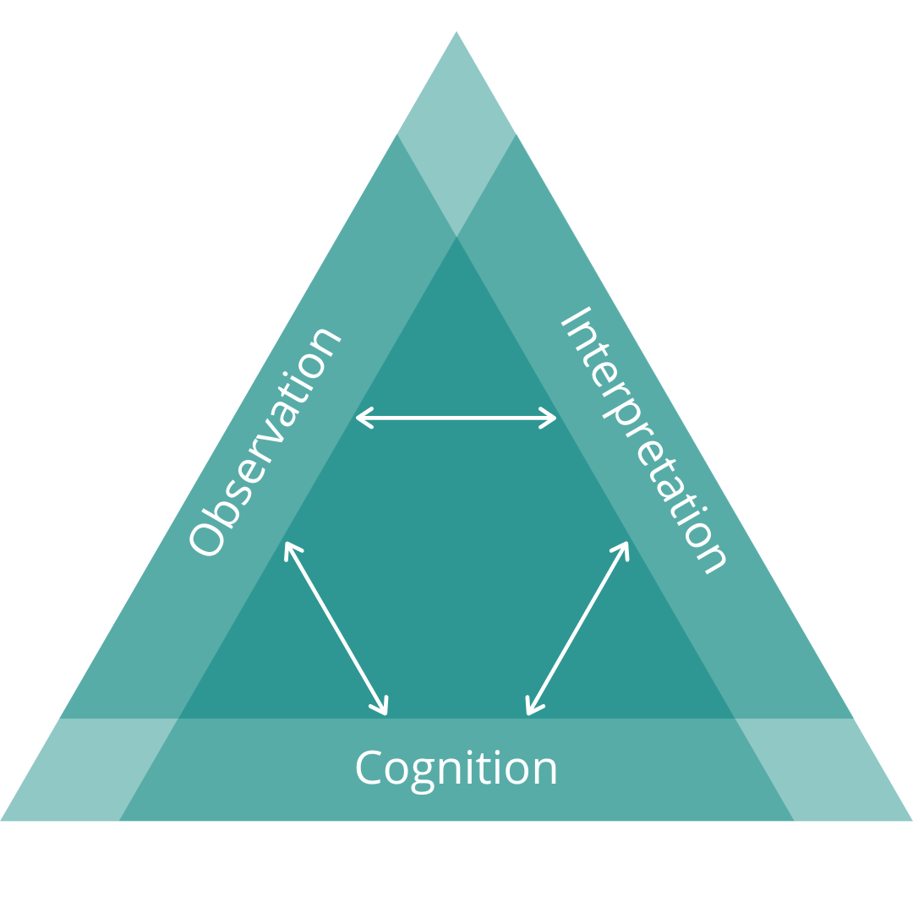

Overview
In this unit, we will explore the nature of technology integrated assessment. In any formal learning environment, and many informal learning environments, there is a requirement for the instructor to engage in some sort of assessment of how well the learners are achieving the outcomes intended in the course design. Typically, this has happened with the assignment of a grade in a percentage or letter format, and usually accompanied by a significant amount of feedback from the instructor. In order to do this, the instructor needs to come to know what the learner knows, can do, or has become in relation to the outcomes. Coaching and facilitation are two activities that are highly dependent on assessing a learner’s knowledge or ability in relation to a learning outcome and are key components of the process of certifying that a learner has achieved a certain level of proficiency. Knowledge of results occurs when an instructor or learner have identified a gap between what the learner is currently able to do and what they should be able to do in light of the course or program learning outcomes. Feedback occurs when information about how to close that gap is identified and the learner has the opportunity to improve their performance.
Topics
This unit is divided into the following topics:
- What is educational assessment?
- What is wrong with educational assesment?
- How does technology impact assessment?
- Feedback Loops and Spirals
Unit Learning Outcomes
When you have completed this unit, you will be able to:
- Evaluate the quality of feedback in light of evidence-based research
- Evaluate interactions in a learning environment and develop strategies for high quality educative interactions
Learning Activities
Here is a list of learning activities that will benefit you in completing this unit. You may find it useful for planning your work.
- Read, annotate, and tag
- Allen, J. D. (2005). Grades as Valid Measures of Academic Achievement of Classroom Learning. The Clearing House: A Journal of Educational Strategies, Issues and Ideas, 78(5), 218–223.
- Bower, M. (2019). Technology‐mediated learning theory. British Journal of Educational Technology, 50(3), 1035–1048.
- Carless, D. (2019). Feedback loops and the longer-term: Towards feedback spirals. Assessment & Evaluation in Higher Education, 44(5), 705–714.
- Lipnevich, A. A., Guskey, T. R., Murano, D. M., & Smith, J. K. (2020). What do grades mean? Variation in grading criteria in American college and university courses. Assessment in Education: Principles, Policy & Practice, 27(5), 480–500. https://doi.org/10/ghjw3k
- Hattie, J., & Timperley, H. (2007). The power of feedback. Review of Educational Research, 77, 81–112. https://doi.org/10.3102/003465430298487
- Post 4
5.1 What is Educational Assessment?
A key component of facilitation and coaching in an educational environment is understanding how educators come to know what learners know. In this case, coaches and facilitators are educators in that they are key to supporting learners as they study. A facilitator or coach can play the role of the more experienced ‘other’ that a learner needs to get them from the zone of not being able to complete a task, to being able to complete it with assistance in their zone of proximal development (Vygotsky, 1978). However, coming to know what learners know is not really a simple task because ‘learning’ and ‘knowledge’ are not things that we can see or measure. There are many things in our world that we can measure, like the mass of an apple, or the distance between two points, or the volume of an ingredient in a recipe. Knowledge is not like that, though, because it is encoded in the myriad connections between neurons in our brains. We can’t examine a person’s brain and determine what they know.
For example, if we want to know if a learner can calculate the following:
\[2+2=x\]
we cannot examine the physical properties of their brain to learn anything about whether they know how to calculate that sum. Instead, we must ask them to provide the answer. If they provide the following:
\[2+2=\text{apple}\]
we can then infer that they do not know how to calculate that sum. We can’t be certain though, because they may have mistyped, or otherwise gotten confused about the task, or distracted because they were hungry. Conversely, if they respond with
\[2+2=4\]
We can infer that they do know how to calculate the sum, but again, we can’t be sure. Perhaps they asked someone else, or used a calculator. The point is that we cannot truly measure a person’s knowledge because knowledge of any given thing is latent, or not observable.
Educational assessment can be framed as a trio of components that are essential to allowing instructors to learn what learners know. First, there must be some sort of cognitive domain that is mapped and understood. In the case above, the cognitive domain might be addition as a mathematical procedure. Second, there must be some sort of observation in the form of a performance task, like ‘calculate \(2+2\)’. Third, there is always an interpretation of the results of the performance task, the inference mentioned above.

(Lipnevich et al., 2020)
5.1.1 3 Purposes of Assessment
5.1.1.1 Assessment of learning
5.1.1.2 Assessment for learning
5.1.1.3 Assessment as learning
5.2 What is wrong with Educational Assessment?
5.2.1 The math doesn’t add up
5.2.2 Fair does not mean equal
5.2.3 Understanding Learning Outcomes
- review of 627
5.2.4 Creating Learning Outcomes
- new practice
5.3 How does Technology Impact Educational Assessment?
(Bower, 2019)
5.3.1 Technology-mediated learning
5.3.2 Technology and assessment
5.4 Feedback Loops and Spirals
(Carless, 2019; Hattie & Timperley, 2007)